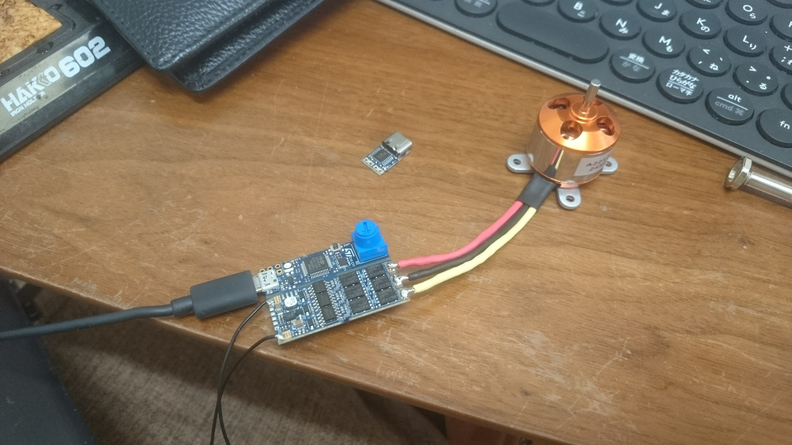

BLDCモータの制御
モータには複数の種類があり、一般的に思い浮かべる、電池を直接接続することで、回転することができるモータを「ブラシ付きDCモータ」と呼びます。
通常、コイルに電気を流すと、近くにある磁石は、コイルによって向きが変えられますが、連続的に回転させようと思うと、磁石が半回転するごとに、電流を切り替える必要があります。
これを自動で行うパーツが「ブラシ」と呼ばれ、「ブラシ付きDCモータ」となります。(正確には磁石は回転せず、コイルが回転しているが)
ここで、電流の切り替えをコンピュータで高精度で制御することで、従来のモータよりも高効率、高精度で制御できるモータを「ブラシレスDCモータ」と呼びます。これを略すと「BLDC」となります。
このモータを制御するには、専用の回路とプログラムが必要ですが、今回は回路を市販の物を仕様し、プログラムも出来合いのものを利用したので、まだ原理を理解する段階ですが、モータを回転させる事はできました。